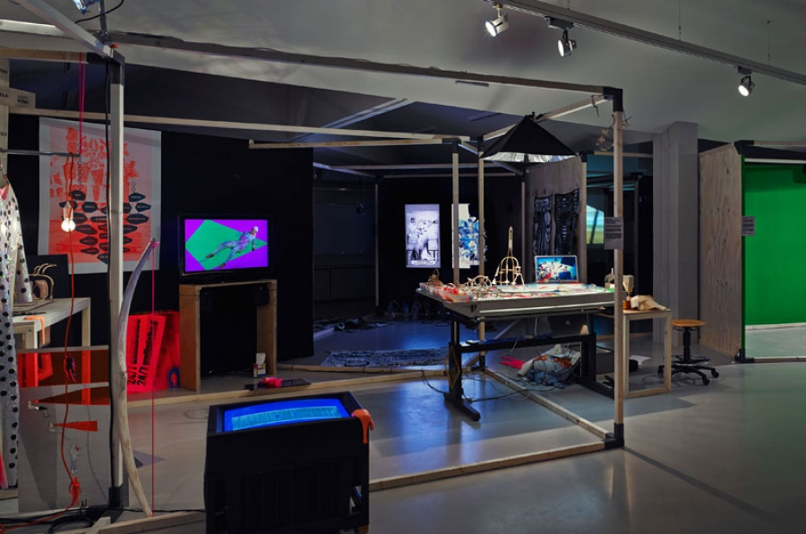
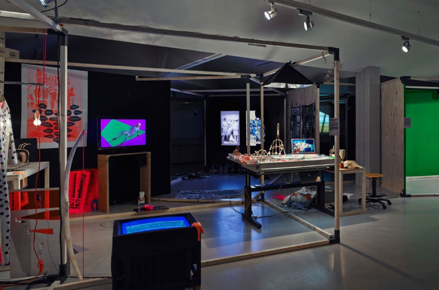

|
|
||
| Date of birth | 1986-07-11 | |
| Graduation year | Dialetheia (2016) | |
| Nationality | PL | |
| Biography | 2010-2014 Bachelor of Graphic Design, Gerrit Rietveld Academie, Amsterdam The Netherlands |
|
| Websites | http://www.agazima.org/ http://www.agazima.tumblr.com/ | |
| Title | Year | Excerpt | Media |
|---|---|---|---|
| The Shelter | 2016 | Why is it so difficult to find a place to live in big cities like Paris, London or Amsterdam? Why are the prices so high? How is it possible that with so many empty places, so many people have no place to live? Isn’t it absurd to struggle that much paying a fortune to live in ridiculously small apartments! Why do we keep on doing that? We live like it’s a fatality, thinking that we are free to choose while we keep on achieving what the course of society and history imposes. |

 

|
| Digital detox bath | 2015 | tal detox bath” is an installation about a different approach to what material means. we reinvent what material means by our intercation with virtuality. we experience things on the screen more vividly than if we would experience them otherwise. with this installation i wanted to translate this interaction with digital materiality. i have created sort of organic environment that lets you experience the material, the texture by looking at the screen. |
|